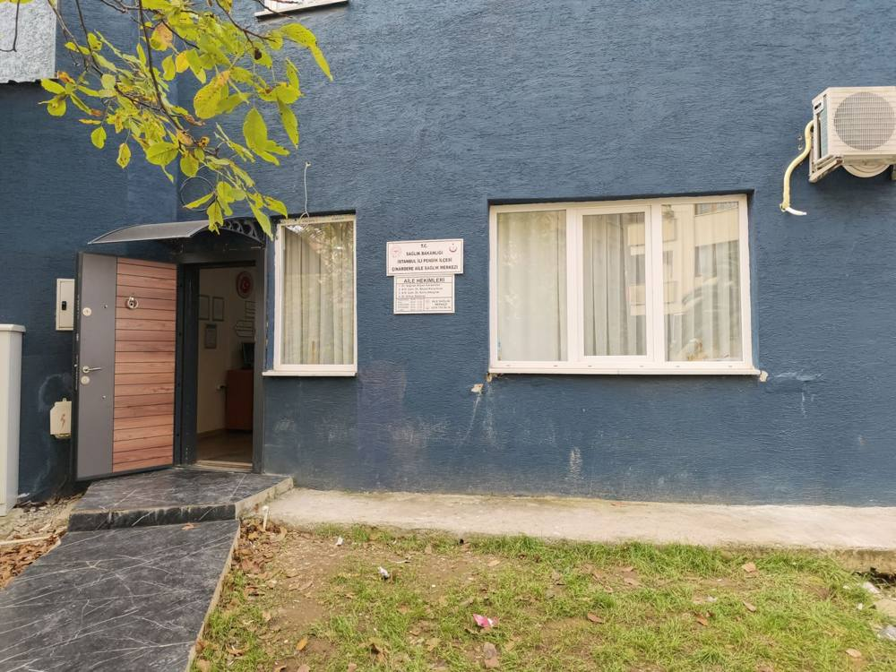
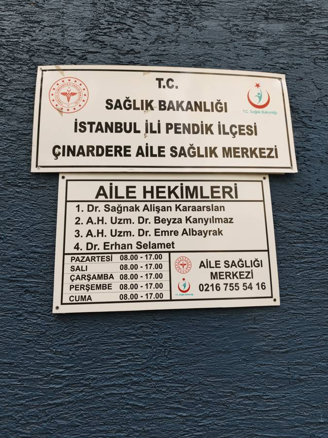

61 No'lu Birim Aile Hekimi
Dr. Sağnak Alişan Karaarslan
- Birim kodu
- 34.28.061
- ASÇ
- Ayşe Aydın
Kurum dışı hizmet: Pazartesi öğleden sonra
4 aile sağlığı birimiyle kayıtlı vatandaşlarımıza koruyucu sağlık hizmetleri ile birinci basamak tanı, tedavi ve takip hizmetleri sunuyoruz.
MHRS'den Randevu AlKadromuzSon güncelleme: 27.11.2026
Aile hekimlerimiz ve aile sağlığı çalışanlarımız
Kurum dışı hizmet: Pazartesi öğleden sonra
Kurum dışı hizmet: Perşembe öğleden sonra
Kurum dışı hizmet: Çarşamba öğleden sonra
Kurum dışı hizmet günü yoktur
Aile sağlığı merkezimizle ilgili bilmeniz gerekenler
Aile sağlığı merkezimizde verilen başlıca hizmetler
Birinci basamak tanı ve tedavi, gerektiğinde üst basamağa sevk.
Gebe, lohusa, bebek, çocuk, yaşlı ve kronik hasta izlemleri.
Aşı takvimindeki aşıların uygulanması ve takibi.
Üreme sağlığı ve aile planlaması danışmanlığı.
Basit tetkikler için numune alma; sonuçlar e-Nabız'da.
Sağlıklı yaşam, beslenme, gebelik ve hijyen eğitimleri.
Meme kanseri, kadınlarda en sık görülen kanser türüdür ve erken teşhis edildiğinde tedavi başarısı çok yüksektir. Ulusal Kanser Tarama Programı kapsamında 40–69 yaş…
Rahim ağzı (serviks) kanseri, düzenli taramalarla önlenebilen kanserlerdendir. 30–65 yaş arasındaki kadınlara beş yılda bir HPV testi (gerekirse smear ile birlikte)…
Kalın bağırsak (kolorektal) kanseri erken dönemde çoğu zaman belirti vermez. Ulusal tarama programında 50–70 yaş arasındaki kadın ve erkeklere iki yılda bir gaitada…
Ana Sayfa / Kurumsal
Haftalık esnek mesai şeklinde çalışılmaktadır. Ayrıntılı çalışma saatlerini kayıtlı olduğunuz aile hekimliği biriminden takip edebilirsiniz.
Aşağıdaki hekimlerimiz belirtilen günlerin öğleden sonrasında merkez dışında görevlidir.
Acil durumlarda 112'yi arayınız.
| Birim | Aile hekimi | Mesai çizelgesi |
|---|---|---|
| 61 No'lu Birim | Dr. Sağnak Alişan Karaarslan | Mesai çizelgesini görüntüle (PDF, 168 KB) |
| 62 No'lu Birim | Uzm. Dr. Beyza Kanyılmaz | Güncel liste eklenecektir. |
| 172 No'lu Birim | Uzm. Dr. Emre Albayrak | Mesai çizelgesini görüntüle (PDF, 160 KB) |
| 266 No'lu Birim | Dr. Erhan Selamet | Güncel liste eklenecektir. |
Ana Sayfa / Kadromuz
Kurum dışı hizmet: Pazartesi öğleden sonra
Kurum dışı hizmet: Perşembe öğleden sonra
Kurum dışı hizmet: Çarşamba öğleden sonra
Kurum dışı hizmet günü yoktur
61 No'lu Birim · Dr. Sağnak Alişan Karaarslan
62 No'lu Birim · Uzm. Dr. Beyza Kanyılmaz
172 No'lu Birim · Uzm. Dr. Emre Albayrak
Ana Sayfa / ASM Rehberi
Engelli erişimi: Merkezimizde engelli bireylerin kullanımına uygun giriş ve engelli tuvaleti bulunmaktadır. Yardıma ihtiyaç duyarsanız personelimize başvurabilir veya gelmeden önce 0 (216) 755 54 16 numaralı telefondan bize haber verebilirsiniz.
Acil durumlar dışında aşağıdaki hastalarımıza muayene sırasında öncelik tanınır:
Hasta Hakları Yönetmeliği kapsamında her hastanın; hizmetten adalet ve hakkaniyete uygun yararlanma, sağlık durumu hakkında bilgi isteme, saygı ve güler yüzle karşılanma, mahremiyetine saygı gösterilmesi, kişisel bilgilerinin gizli tutulması, tıbbi işlemleri reddetme ve başvuru, şikâyet ve dava hakları vardır.
Hasta sorumlulukları: Hastalarımızdan sağlık durumu ve kullandığı ilaçlar hakkında doğru bilgi vermeleri, randevularına zamanında gelmeleri veya gelemeyecekleri durumda randevularını iptal etmeleri, hekimin önerilerine uymaları ve sağlık çalışanlarına ve diğer hastalara saygılı davranmaları beklenir. Sağlık çalışanlarına yönelik şiddet suçtur; şiddet ihbarları için Beyaz Kod 113 kullanılır.
Öneri ve şikâyetlerinizi merkez yönetimimize iletebilir, Sağlık Bakanlığı İletişim Merkezi'ni (SABİM) ALO 184 hattından arayabilir veya CİMER üzerinden başvurabilirsiniz.
e-Devlet Kapısı'ndaki Aile Hekimi Bilgisi hizmetinden veya e-Nabız üzerinden öğrenebilirsiniz.
Aile hekimi değişikliği e-Devlet üzerinden veya aile sağlığı merkezine başvurularak yapılabilir. Değişiklik koşulları mevzuatla belirlenmiştir; güncel bilgi için merkezimize danışınız.
MHRS internet sitesi veya mobil uygulaması, e-Nabız ya da ALO 182 hattından aile hekiminize randevu alabilirsiniz.
Acil durumlarda 112'yi arayınız. Acil olmayan durumlarda en yakın hastanenin acil servisine başvurabilirsiniz.
Ana Sayfa / Duyurular
Meme kanseri, kadınlarda en sık görülen kanser türüdür ve erken teşhis edildiğinde tedavi başarısı çok yüksektir. Ulusal Kanser Tarama Programı kapsamında 40–69 yaş arasındaki kadınlara iki yılda bir mamografi çekilmesi önerilir. Taramalar ücretsizdir; yönlendirme ve randevu için aile hekiminize veya Kanser Erken Teşhis, Tarama ve Eğitim Merkezi'ne (KETEM) başvurabilirsiniz. 20 yaşından itibaren ayda bir kendi kendine meme muayenesi yapmayı da ihmal etmeyiniz.
Rahim ağzı (serviks) kanseri, düzenli taramalarla önlenebilen kanserlerdendir. 30–65 yaş arasındaki kadınlara beş yılda bir HPV testi (gerekirse smear ile birlikte) yapılması önerilir. Test kısa sürer, ağrısızdır ve ücretsizdir. Test zamanınız gelip gelmediğini öğrenmek ve numune verdirmek için aile hekiminize başvurunuz; sonuçlarınızı e-Nabız'dan takip edebilirsiniz.
Kalın bağırsak (kolorektal) kanseri erken dönemde çoğu zaman belirti vermez. Ulusal tarama programında 50–70 yaş arasındaki kadın ve erkeklere iki yılda bir gaitada gizli kan testi, on yılda bir kolonoskopi önerilir. Gaitada gizli kan testi kitini aile sağlığı merkezimizden ücretsiz alabilirsiniz. Dışkıda kan, bağırsak alışkanlığında değişiklik veya açıklanamayan kilo kaybı varsa beklemeden hekiminize başvurunuz.
Obezite; diyabet, hipertansiyon, kalp hastalıkları ve bazı kanserler için önemli bir risk etkenidir. Yetişkinlerde beden kitle indeksinin 30 ve üzerinde olması obezite olarak tanımlanır; bel çevresinin kadınlarda 88 cm, erkeklerde 102 cm ve üzerinde olması da yüksek risk göstergesidir. Haftada en az 150 dakika orta düzeyde fiziksel aktivite, sebze ve meyve ağırlıklı beslenme ve şekerli içeceklerden uzak durmak en etkili adımlardır. Boy, kilo ve bel çevresi ölçümünüzü merkezimizde yaptırabilir, sitemizdeki beden kitle indeksi hesaplama aracını kullanabilirsiniz.
Yüksek tansiyon çoğu zaman hiçbir belirti vermez, ancak kalp krizi, inme ve böbrek hastalığı riskini belirgin şekilde artırır. 18 yaşın üzerindeki herkesin en az yılda bir kez tansiyonunu ölçtürmesi önerilir. Tuz tüketimini azaltmak, sigarayı bırakmak, düzenli hareket etmek ve ideal kiloyu korumak tansiyonu kontrol altında tutmaya yardımcı olur. Tansiyon ölçümü ve takibi merkezimizde ücretsiz yapılmaktadır.
Grip, özellikle 65 yaş üstü kişilerde, gebelerde ve kronik hastalığı olanlarda ağır seyredebilir. Bu risk gruplarındaki kişilere grip aşısının her yıl, tercihen sonbahar aylarında yaptırılması önerilir. Sık el yıkamak, öksürürken ve hapşırırken ağzı mendille kapatmak ve hasta iken kalabalık ortamlardan uzak durmak da bulaşmayı azaltır. Grip aşısı için uygun olup olmadığınızı aile hekiminize danışabilirsiniz. Grip viral bir hastalıktır; antibiyotikler grip tedavisinde işe yaramaz.
Ana Sayfa / Galeri


Ana Sayfa / Site Haritası
Ana Sayfa / Kurumsal
Çınardere Aile Sağlığı Merkezi, Aile Hekimliği Uygulama Yönetmeliği kapsamında Pendik İlçe Sağlık Müdürlüğü'ne bağlı olarak 4 aile sağlığı birimiyle hizmet vermektedir.
Merkezimizde kayıtlı kişilere kişiye yönelik koruyucu sağlık hizmetleri ile birinci basamak tanı, tedavi ve rehabilitasyon hizmetleri sunulur. Aile hekimlerimiz gerektiğinde hastalarını ikinci ve üçüncü basamak sağlık kuruluşlarına sevk eder ve takiplerini sürdürür.
Ana Sayfa / Kurumsal
| No | Hizmetin adı | Başvuruda istenen belgeler | Tamamlanma süresi (en geç) |
|---|---|---|---|
| 1 | Aile hekimi seçimi (ilk kayıt) | Kimlik belgesi | 1 hafta |
| 2 | Aile hekimi değişikliği | Kimlik belgesi, aile hekimi tercih formu, dilekçe | 1 hafta |
| 3 | Poliklinik muayenesi | Kimlik belgesi | Aynı gün |
| 4 | Misafir hasta muayenesi | Kimlik belgesi | Aynı gün |
| 5 | Sağlık kuruluşuna sevk | Kimlik belgesi | Aynı gün |
| 6 | Küçük cerrahi müdahale | Kimlik belgesi | Aynı gün |
| 7 | Tek hekim sağlık raporu | Kimlik belgesi, kişisel sağlık bilgi formu (e-Devlet) | Aynı gün |
| 8 | Basit laboratuvar tetkikleri | Kimlik belgesi | 3 gün |
| 9 | Bebek, çocuk ve kadın izlemleri | Kimlik belgesi | Aynı gün |
| 10 | Bağışıklama (aşı) hizmetleri | Kimlik belgesi, aşı kartı | Aynı gün |
| 11 | Aile planlaması hizmetleri | Kimlik belgesi | Aynı gün |
| 12 | Mobil hizmet / ev ziyareti | Kimlik belgesi | 1 hafta |
| 13 | Sağlık eğitimleri | – | 1 hafta |
| 14 | Sürekli ilaç kullanım raporu (uzman aile hekimi) | Kimlik belgesi | – |
Başvuru esnasında yukarıda belirtilen belgelerin dışında belge istenmesi, eksiksiz belge ile başvuru yapılmasına rağmen hizmetin belirtilen sürede tamamlanmaması veya yukarıdaki tabloda bazı hizmetlerin bulunmadığının tespiti durumunda ilk müracaat yerine ya da ikinci müracaat yerine başvurunuz.
Dr. İsmail Arabacı
Pendik İlçe Sağlık Müdürü
Doğu Mah. Nevbahar Sk. No: 2, Pendik / İstanbul
Tel: 0 (216) 396 16 30
Doç. Dr. Abdullah Emre Güner
İstanbul İl Sağlık Müdürü
Binbirdirek, Peykhane Cd. No: 8, 34122 Fatih / İstanbul
Tel: 0 (212) 638 30 00
Hastalıklar ortaya çıkmadan önlenmesine yönelik danışmanlık, risk değerlendirmesi ve periyodik sağlık kontrolleri.
Poliklinik muayenesi, birinci basamak tanı ve tedavi, reçete düzenleme ve gerektiğinde üst basamağa sevk.
Hastalık veya yaralanma sonrasında günlük yaşama dönüşü destekleyen takip ve yönlendirme.
Genişletilmiş Bağışıklama Programı kapsamında bebek, çocuk, gebe ve erişkin aşıları.
Büyüme-gelişme izlemi, topuk kanı ve diğer tarama programları, koruyucu bakım.
Gebe ve lohusa izlemleri, üreme sağlığı ve aile planlaması danışmanlığı.
Ulusal programlar kapsamında meme, rahim ağzı ve kalın bağırsak kanseri taramaları ile yönlendirme.
Hipertansiyon, diyabet ve benzeri kronik hastalıkların düzenli izlemi.
Sağlıklı yaşam, beslenme, ağız-diş sağlığı gibi konularda bireysel ve toplu bilgilendirme.
Pansuman, dikiş atma ve alma gibi basit girişimler.
Basit laboratuvar tetkikleri için numune alma; sonuçlar e-Nabız'dan görüntülenebilir.
Mevzuatın aile hekimlerine verdiği yetki kapsamında tek hekim raporları ve uzman aile hekimlerince ilaç raporları.
Yatağa bağımlı, yaşlı ve engelli kayıtlı kişilere ev ziyareti ve gezici hizmetler.
18 yaş ve üzeri içindir. Sonuç bilgilendirme amaçlıdır; değerlendirme için aile hekiminize danışınız.
Eşik değerler: kadında 80 cm ve üzeri artmış, 88 cm ve üzeri yüksek risk; erkekte 94 cm ve üzeri artmış, 102 cm ve üzeri yüksek risk.
Adres: Çınardere Mah. Asri Sk. No: 6, 34896 Pendik / İstanbul
Haritada aç (Google Haritalar)
Telefon: 0 (216) 755 54 16
E-posta: cinardere.asm34@gmail.com
Engelli erişimi: Merkezimizde engelli girişi ve engelli tuvaleti bulunmaktadır.
Haftalık esnek mesai şeklinde çalışılmaktadır. Ayrıntılı çalışma saatlerini kayıtlı olduğunuz aile hekimliği biriminden takip edebilirsiniz.
Öneri ve şikâyetlerinizi merkez yönetimimize iletebilir, Sağlık Bakanlığı İletişim Merkezi'ni (SABİM) ALO 184 hattından arayabilir veya CİMER üzerinden başvurabilirsiniz. 4982 sayılı Bilgi Edinme Hakkı Kanunu kapsamındaki başvurularınızı da CİMER üzerinden yapabilirsiniz.
Bu sitede iletişim formu bulunmamaktadır; sağlık bilgilerinizi e-posta yoluyla paylaşmayınız.
Bu metin, 6698 sayılı Kişisel Verilerin Korunması Kanunu'nun 10. maddesi uyarınca, Çınardere Aile Sağlığı Merkezi internet sitesini ziyaret eden kişileri bilgilendirmek amacıyla hazırlanmıştır.
Veri sorumlusu: Çınardere Aile Sağlığı Merkezi, Çınardere Mah. Asri Sk. No: 6, 34896 Pendik / İstanbul. Tel: 0 (216) 755 54 16. E-posta: cinardere.asm34@gmail.com
İşlenen kişisel veriler: Bu site üyelik, iletişim formu, çerez veya ziyaretçi takip aracı içermez; ziyaretçilerden ad, T.C. kimlik numarası, sağlık bilgisi gibi kişisel veri talep edilmez. Hesaplama araçlarına girilen boy, kilo ve bel çevresi değerleri yalnızca tarayıcınızda işlenir, sunucuya gönderilmez ve saklanmaz. Sitenin barındırıldığı sunucu, güvenlik amacıyla ve 5651 sayılı Kanun gereği IP adresi ve erişim zamanı gibi teknik kayıtları tutabilir.
İşleme amacı ve hukuki sebep: Teknik kayıtlar, sitenin güvenliğinin sağlanması ve yasal yükümlülüklerin yerine getirilmesi amacıyla, Kanun'un 5/2-ç maddesi (hukuki yükümlülük) ve 5/2-f maddesi (meşru menfaat) kapsamında işlenir.
Aktarım: Kişisel veriler, yalnızca kanunen yetkili kamu kurum ve kuruluşlarının talebi hâlinde ve mevzuatın izin verdiği ölçüde aktarılabilir.
Muayene ve sağlık hizmetleri: Merkezimizde sunulan sağlık hizmetleri kapsamında işlenen kişisel sağlık verileriniz, Sağlık Bakanlığı mevzuatı ve 6698 sayılı Kanun'un 6. maddesi çerçevesinde işlenir. Bu konudaki ayrıntılı bilgiyi merkezimizden alabilirsiniz.
Haklarınız: Kanun'un 11. maddesi uyarınca; kişisel verilerinizin işlenip işlenmediğini öğrenme, işlenmişse bilgi talep etme, işlenme amacını ve amacına uygun kullanılıp kullanılmadığını öğrenme, aktarıldığı üçüncü kişileri bilme, eksik veya yanlış işlenmişse düzeltilmesini, şartları oluştuğunda silinmesini veya yok edilmesini isteme, otomatik sistemlerle analiz sonucu aleyhinize bir sonuç çıkmasına itiraz etme ve kanuna aykırı işleme nedeniyle zarara uğramanız hâlinde zararın giderilmesini talep etme haklarına sahipsiniz.
Başvuru: Bu haklarınıza ilişkin taleplerinizi kimliğinizi doğrulayan bilgilerle birlikte yazılı olarak merkezimize elden teslim edebilir, iadeli taahhütlü posta ile gönderebilir veya cinardere.asm34@gmail.com adresine e-posta ile iletebilirsiniz. Başvurular en geç 30 gün içinde ücretsiz olarak sonuçlandırılır.
Bu internet sitesi çerez, izleme veya analiz aracı kullanmamaktadır. Hesaplama araçlarına girilen değerler hiçbir yere gönderilmez ve saklanmaz.
Bu site, 2025/10 sayılı Web Siteleri ve Mobil Uygulamaların Erişilebilirliği konulu Cumhurbaşkanlığı Genelgesi doğrultusunda Web İçeriği Erişilebilirlik Yönergeleri (WCAG) 2.2 esas alınarak hazırlanmıştır. Sitede klavye ile gezinme, "içeriğe geç" bağlantısı, ekran okuyucu uyumlu başlık yapısı, görseller için alternatif metinler, yeterli renk kontrastı ve büyütülebilir metin bulunmaktadır. Merkezimizin binasında da engelli girişi ve engelli tuvaleti bulunmaktadır. Erişilebilirlik sorunlarını 0 (216) 755 54 16 numaralı telefondan veya cinardere.asm34@gmail.com adresinden bildirebilirsiniz.